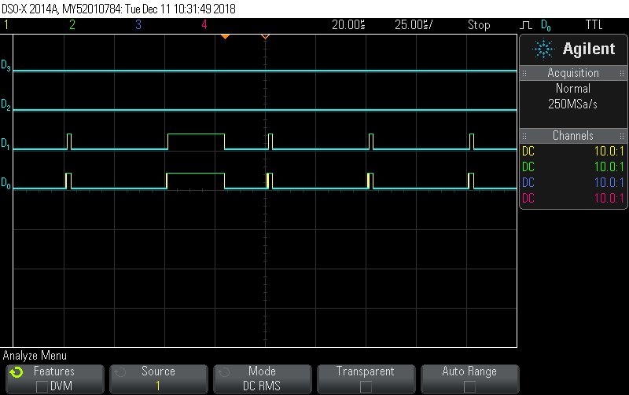
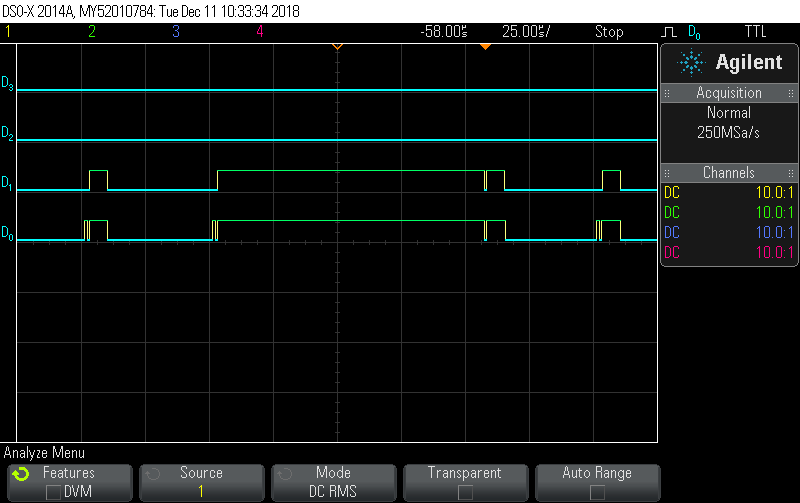
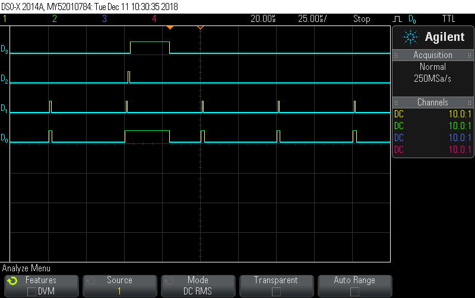
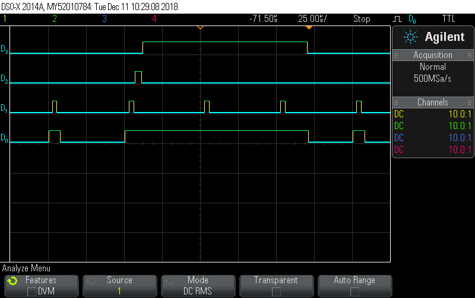
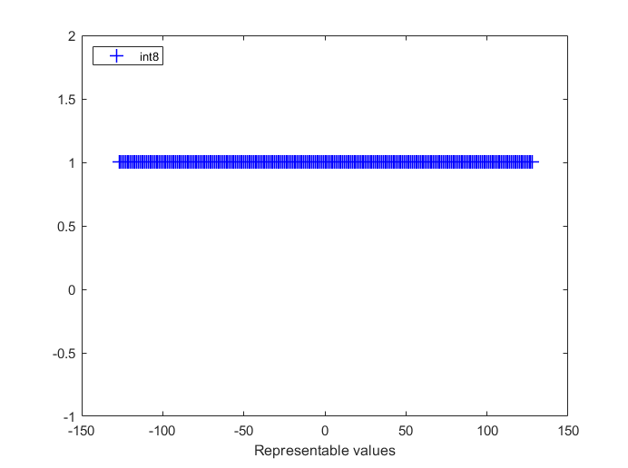
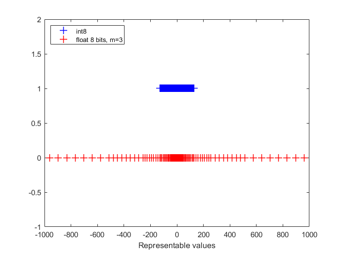
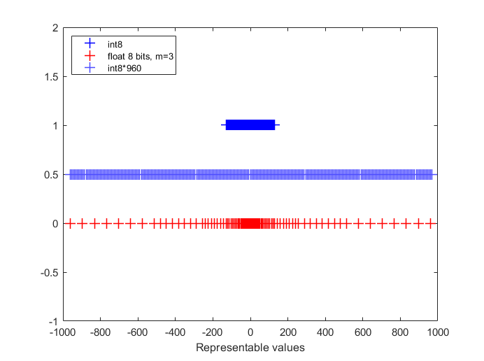
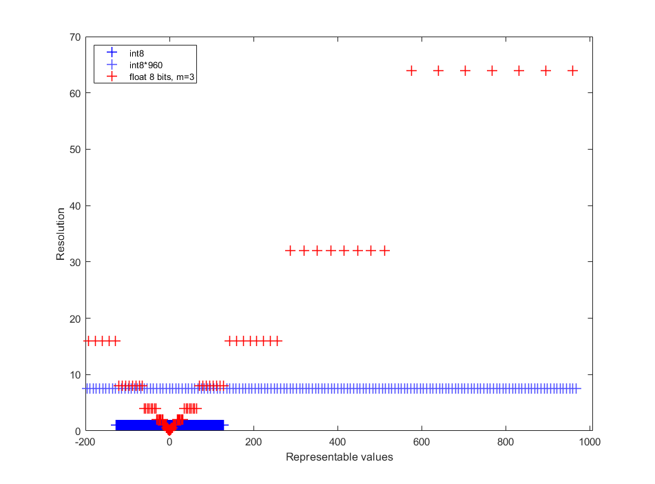

Prototypage rapide avec Simulink sur dsPIC
MPLAB device blocks for Simulink
L.Kerhuel & R.Delpoux

Plan:
Modèle de simulation & génération de code
- Différence Temporel
- optimization et type de données
- blocks et fonctionalités Simulink
Aspect Temporel:
Simulation
Modélisation en temps continue, transformé de Laplace dans le domaine p (ou s)
- Solver résout les équations différentiels
- Pas de contrainte temps réelle
- Résultat dépend du solveur ; pas de calcul variable.
Aspect Temporel:
Implémentation
Implémentation en temps discret avec un pas de calcul fixe
- pas de solveur
- Contrainte temps réel
- Single-Rate & Multi-Rate
- Single-Tasking & Multi-Tasking
Discrete times
Single-rate:
- Les blocks ont tous la même période d’exécution (même couleur)
Multi-Rate
- Les blocks peuvent avoir des période d’exécution différentes (schéma multicolor)
Modèle multirate
Charge CPU d’un modéle multirate single_tasking (@70 mips)

Charge CPU d’un modéle multirate single-tasking (@20 mips)

Single-Tasking
Single-Tasking: Dans le slot de temps, l’exécution de tous les blocks doit se terminer avant la fin du slot.
Multi-Tasking
Multi-Tasking: Préemption possible -> Monotonic Rate Scheduler
- La tâche la plus fréquente à la priorité maximale
- Préemptera une tache plus lente
- Beaucoup plus flexible
- Mode par défaut (voir options du solveur)
Charge CPU d’un modéle multirate single-tasking (@70 mips)

Charge CPU d’un modéle multirate single-tasking (@20 mips)

Tasking Conclusion
- Single-Tasking @ 20 MIPS -> Overload
- dispatcher la tache la plus lente sur plusieurs slots
- (option d’offset dans Time Step -> [.001 .005])
- Multi-Tasking @ 20 MIPS -> Ok
- Rate transfert block options
- Data Integrity
- Deterministic data transfert
- Rate transfert block options
Optimization
type de données
- Virgule Fixe
- Virgule Flotante

IEEE 754
| Parameter | Single | Double |
|---|---|---|
| Format width | 32 | 64 |
| Sign bit | 1 | 1 |
| exponent width | 8 | 11 |
| Precision width | 23+1 | 52+1 |
1st bit of the significand is always 1. Phantom bit
Custom 8 bit Floating point
| Parameter | Single | Double | Custom |
|---|---|---|---|
| Format width | 32 | 64 | 8 |
| Sign bit | 1 | 1 | 1 |
| exponent width | 8 | 11 | 4 |
| Precision width | 23+1 | 52+1 | 3+1 |



Matlab code generating all 8 bit floating values
% 4 bit exponent (signed)
emax = 6; emax = 7;
% 3 bits significand
p = 3;
exps = 2.^[emin:emax];
vals = (2^p) + [0:(2^p-1)]; % significand with leading 1
TotalVal = vals'*exps;
% add denormalized values
8bitFloat = unique([TotalVal ; 2^emin * [0:(2^m-1)]']);
8bitFloat = unique(flipud(-TotalVal) ;TotalVal]); % with neg vals
My Title !
mes notes
Controls
- Next:
Right ArroworSpace - Previous:
Left Arrow - Start:
Home - Finish:
End - Overview:
Esc - Speaker notes:
S - Fullscreen:
F - Zoom:
Alt + Click - PDF Export:
E
Code Highlighting
Inline code: variable
Code block:
porridge = "blueberry"
if porridge == "blueberry":
print("Eating...")
Math
In-line math: $x + y = z$
Block math:
$$ f\left( x \right) = \;\frac{{2\left( {x + 4} \right)\left( {x - 4} \right)}}{{\left( {x + 4} \right)\left( {x + 1} \right)}} $$
Fragments
Make content appear incrementally
{{% fragment %}} One {{% /fragment %}}
{{% fragment %}} **Two** {{% /fragment %}}
{{% fragment %}} Three {{% /fragment %}}
Press Space to play!
One Two Three
A fragment can accept two optional parameters:
class: use a custom style (requires definition in custom CSS)weight: sets the order in which a fragment appears
Speaker Notes
Add speaker notes to your presentation
{{% speaker_note %}}
- Only the speaker can read these notes
- Press `S` key to view
{{% /speaker_note %}}
Press the S key to view the speaker notes!
Themes
- black: Black background, white text, blue links (default)
- white: White background, black text, blue links
- league: Gray background, white text, blue links
- beige: Beige background, dark text, brown links
- sky: Blue background, thin dark text, blue links
- night: Black background, thick white text, orange links
- serif: Cappuccino background, gray text, brown links
- simple: White background, black text, blue links
- solarized: Cream-colored background, dark green text, blue links
Custom Slide
Customize the slide style and background
{{< slide background-image="/img/boards.jpg" >}}
{{< slide background-color="#0000FF" >}}
{{< slide class="my-style" >}}
Custom CSS Example
Let’s make headers navy colored.
Create assets/css/reveal_custom.css with:
.reveal section h1,
.reveal section h2,
.reveal section h3 {
color: navy;
}